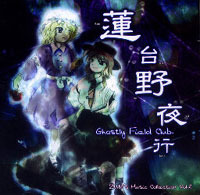
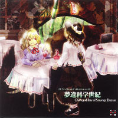
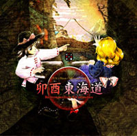
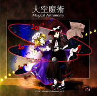
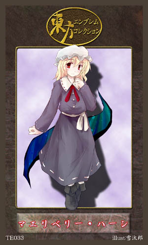
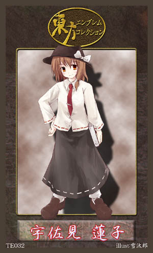
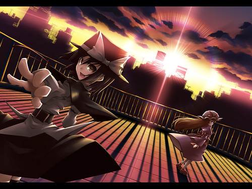
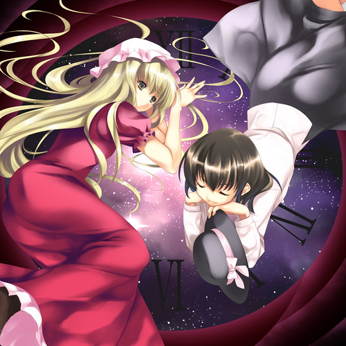
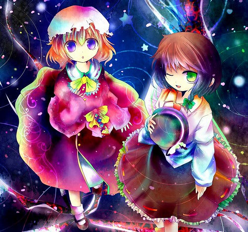
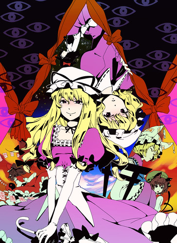

話說在前，這裡所有的推廣教程都是我自己閱讀過各種資料後總結編寫的
而本人不是什麼資深東方迷，謬誤在所難免 ._.
所以教程都會保持更新修正。還是老話一句... 請不要任意轉載
本篇文章將介紹：
1. 秘封俱樂部的兩位成員：瑪莉貝莉．赫恩(マエリベリー‧ハーン / Maribel Han) 和宇佐見蓮子
2. 瑪莉貝莉 = 八雲紫 的考據資料
「秘封倶楽部」這個名詞並不出於東方系列的任何一款遊戲，而是ZUN在2003年後分別在COMIKET上發行的音樂CD『蓮台野夜行 ～ Ghostly Field Club』、『夢違科学世紀 〜 Changeability of Strange Dream.』、『卯酉東海道 〜 Retrospective 53 minutes.』、『大空魔術 〜 Magical Astronomy.』，收錄多首除東方系列BGM以外的原創曲。封面上的兩名少女雖然住在外界卻因偶然的契機發現幻想鄉，她們就是「秘封俱樂部」二人組。
 
 
注意：除了音樂CD的封面，所有圖都是同人，不是ZUN親手繪製。

瑪莉貝莉．赫恩(マエリベリー‧ハーン / Maribel Han)
種族：人類
居處：幻想鄉外的京都
能力：看見結界的能力
昵稱「梅莉」，是一名大學生，主修相對性精神學，和好友蓮子組成專門探索境界的靈異社團「秘封倶楽部」。在『夢違科学世紀』這張音樂CD發生了夢中飛到幻想鄉迷途之家和紫等人會面的事，之後感到很煩惱所以和蓮子商量。蓮子認為梅莉可能擁有穿越或操縱境界的能力，而非常感興趣的樣子。
日文wiki裡還提過一句(但被很多中文資料忽略)「蓮子の能力を常々、気持ち悪いと思っている」，指的是梅莉常覺得蓮子的能力不太討人喜歡，關於這點是為什麼？我就不太清楚了。
外表：紫色洋裝、金色長髮。『蓮台野夜行』是藍色眼睛，到『夢違科学世紀』時是紅色眼睛。
二次設定：巨乳、天然、微S屬性(喜歡欺負蓮子)

宇佐見 蓮子
種族：人類
居處：幻想鄉外的京都
能力：觀星知道時間的能力及由觀月得知所在位置的能力
大學生，主修超統一物理學，亦研究弦理論(「ひも理論」)，和梅莉一樣居住在京都，老家則在東京(根據『卯酉東海道』)。她只要觀察天空就能確切知道時間，可是莫名其妙經常遲到。
外表：黑色帽子和長裙，上身為白襯衫+深色領帶或中國風的上衣。身高比梅莉略高。
二次設定：貧乳(囧)
『ひも理論』
所謂的弦理論（げんりろん），指的是不將粒子當成0次元的點，而是1次元的弦的理論。別名為「ひも理論」。雖然於1970年由南部陽一郎與後藤鐵男所發表與強子(hadron)有關的理論當中登場，但卻被證實不是正確的。只不過，在1984年由麥可．格林(Michel Green)與約翰．休瓦茲(John Schwarz)所發表另外添加了超對稱性弦理論（超弦理論），而使得它再度登上表面舞台。
秘封組算是沒有第三者介入的「官配」 所以雖然是冷門配對 圖還是比較好找的...



看了這些圖 應該很多人已經發現一件事...
那就是梅莉的身邊也會出現八雲紫的「隙間」一樣的東西?
實際上 梅利 = 八雲紫 這個假設 在日站已經引起了廣泛討論
很多人怎麼都接受不能 也有很多人深信不疑
有人列出了 梅利 = 八雲紫 論據如下：
・紫持有「人間と妖怪の境界」這張符卡 <-----這個是最主要證據—八雲紫自身和人類有關聯 她可能同時以妖怪和人類的身份存在
・雖然沒有人看過，但紫聲稱自己到訪過人類的世界
・蓮子說過「梅利或許擁有跨越境界的能力」
・輝夜說過「月之民為了調整地上的人數，將地上人變成了妖怪」
・文說過「八雲紫是有別於其他種族的一人一種族」
・會否是梅利變成隙間妖怪後「越過了“人間と妖怪の境界”呢」
・梅利穿著紫色洋裝、黃色頭髮，怎麼看都和八雲紫外貌過於相似
資料來源：東方考察・メリー＝紫なら、何故メリーは八雲紫と名乗るようになったのか。
當然也有人舉出駁斥的論據 主要是梅莉穿越到幻想鄉時
對一些妖怪感到害怕 明顯不是八雲紫應該有的態度
不過所有這些 都不能作為關鍵有力的證據.
所以 到底梅莉是不是八雲紫 在官方給出說法前 似乎也沒有必要去給出結論
對每個人來說有想象空間總是好事 w

關於秘封俱樂部兩人的本子 我推薦乃藤悟志的「Primal Prime」
最好滿15歲再看 因為還滿煽情的....
最後擺一首改編自她們的主題曲"少女秘封俱樂部"的同人歌曲
「Rondo of fantasy」
歌詞部份 有空的話再弄吧 ._.
不只是幻想鄉境內.... 境外的少女也百合花朵朵開啊 (喂)
我不希望有任何人在這裡發表關於紫是不是梅莉的評論，因為討論不出結果。
[ 推薦閱讀 ]
東方相關的文章目錄 - 2008
{kind=link}
{kind=link}
{kind=link}
{kind=link}
{kind=link}
{kind=link}
{kind=link}